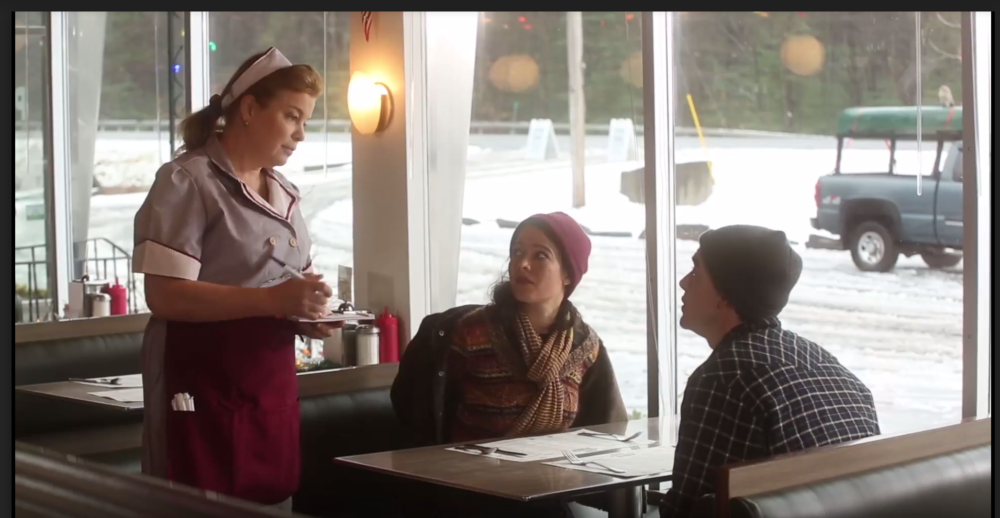

This is Katra Film Series' largest virtual event to date, featuring 30 shorts and 7 features from around the world over 5 nights. The festival seeks to provide a platform for deserving filmmakers to share their work with new audiences and connect with future collaborators during this time of limited socialization. Every block will be followed by a Zoom filmmaker talkback open to all audiences, and all viewers are invited to vote for the festival’s Audience Choice Award Winners who will receive prize packages worth a total of $7000 courtesy of Final Draft, JMR Rentals, Screenblade, 3636 Studio, International Screenwriters’ Association, and Meditative Writing.
FOOTPRINT is a community of real-life creators and storytellers where you can immerse yourself in high-quality scripted series, unscripted shows, documentaries, film and music. You can watch us anytime and anywhere since we are on all the glowing screens. Come for a minute or stay awhile – we’ll make sure there is always great content for you to enjoy!
HiO is not your average store. We are an international retail community featuring exclusively curated European brands in the U.S. Our assortment is always evolving so you’ll always find something new.
It’s a new adventure with each visit. That’s why we named it HiO – Latin for amazing – because you’ll be amazed every time.
In our store you will discover handpicked and exclusive brands from around the world. With access to over 250 brands, our stores will feature a range of eclectic items curated around different themes.
Maybelline, a young Brooklyn teen goes out of her way to straighten her hair behind her mother’s back. Now, Maybelline must make the decision to remain straight or go back to her natural state in order to win back her mother’s respect.
Join us for some discussion on Zoom at the end of the first block!
Zoom Link Here
Block 2 | 8:15pm EDT
In Transit
by Harlan Bosmajian
USA, Narrative, 22min
As Jay films the once in a lifetime Transit of Venus, he gets a call from his estranged father telling him that his grandmother in India is on her deathbed.
Icarus Stops for Breakfast
by Abigail Zealey Bess
USA, Narrative, 12min

Dark comedy – a misfit couple on their first camping trip stop at a diner caught in a time trap where they encounter a magical owl. This is a place where anything can happen…
State of Independence
by Erica Mann
USA, Documentary, 5min
State of Independence is an intimate documentary short following DJ Ghanaian American Gabrielle Kwarteng. With the backdrop of Paris, London, and New York City the film is a personal look into her beginnings as a music curator and how she is defining her own life path through her art.
Join us for some discussion on Zoom at the end of the second block!
Zoom Link Here
Block 1 | 6pm EDT
The Boy in the Bush
by Vanessa Ly
France, Narrative, 34min
A man and a woman drive at night to an unknown destination. He is a judge, she is an actor. He recalls buried memories she is seeking, about a woman accused of killing her own child. As the night unravels she slowly takes on the persona of this woman, until they reach their final destination.
Master Moley By Royal Invitation
by Leon Joosen
UK, Narrative, 33min
The story of a young Mole and his adventure to pick a rose from the Queen’s Garden, not knowing that this simple act will change, not only his life, but the life of all Moles.
Winogrand in Austin
by David Lykes Keenan
USA, Documentary, 12min
A legend of 20th century photography lived and taught, out of the limelight. In Austin, Texas for five years in the mid-1970s. This is both a tribute to and a remembrance of Garry Winogrand.
A couple in a well worn relationship decide to get away for his birthday weekend, renting a converted church in the countryside. Once he starts nosing around their rental he starts notice these “coincidences” and it turns out to be a little spookier than they imagined. As the tension ratchets up, so do the problems plaguing their relationship.
According to Camden
by Rory de Grasse
Canada, Narrative, 18min
Camden was a restless teen struggling to figure out where he fit into his otherwise pleasant suburban family—but after passing suddenly at just 17, he lingers in a bitter afterlife, watching his family move on without him and desperately trying to protect the fragments of the life he’s left behind.
Cross n' Carry
by Sonja Orlewicz
Poland, Narrative, 30min
The story of what Diana and Albert decided to do with their lives after break up, and how they responded to the advice given to them by Jesus and Buddha themselves.
Cul-de-Sac
by Cara Lawson
USA, Narrative, 12min
After committing a heinous act, a young mother battling postpartum depression fights to maintain her sanity.
You Can Kiss Me
by Jan Jalenak
USA, Narrative, 19min
Penelope’s search for the kind of love that’s missing in her life leads her to a motel room with another woman – only to be confronted by the realities of her marriage.
Join us for some discussion on Zoom at the end of the first block!
Zoom Link Here
Block 2 - 8:30pm EDT
The Bird Room
by Noemi d'Ursel
Belgium, Narrative, 27min
Mourning of a beloved man / opens a window on her fantasies / In the castle she has always lived / she wanders between memory and dream.
Without Say
by Neha Gautam
USA, Narrative, 6min
Asha longs for a real intimate connection , until one day she starts exchanging notes with Jasmine, a girl who shares a desk with her in another class. Asha strives to meet her multiple expectations while learning who she is.
SnakeHeadz
by Ivy Rhodes
USA, Narrative, 8min
Claire meets her father Doug at a tea shop and they both have big news.
Paper Boats
by Gonzalo Guajardo-Fajardo
USA, Narrative, 15min
Why can’t Rahel bring herself to sign her artwork? The visit of her high school academic triggers memories of why she is haunted by her surname, yet would not consider changing it.
Join us for some discussion on Zoom at the end of the film!
Zoom Link Here
Feature Two | 8pm EDT
Under the Weight of Remorse
by Lília Moema Santana
Brazil, Narrative, 1hr 50min
Four women meet in the hospital waiting room and even without knowing each other they discover coincidences in their stories and are linked through the same person completely changing their understanding of their lives.
6:50pm EDT - "No Really, It's Fine" Filmmaker Talkback
Join us for some discussion on Zoom at the end of the film!
Zoom Link Here
Feature Two | 7pm EDT
Like Reply Share
by Josh Peterson
USA, Narrative, 1hr 23min
Thrown together by chance amid the estrangements of modern virtual life, two outwardly dissimilar women form an unlikely friendship — until hidden wounds emerge to threaten their fragile bond.
Join us for some discussion on Zoom at the end of the film!
Zoom Link Here
Feature Three | 8:45pm EDT
The Right To Rest
by Sarah Megyesy & Guillermo Roqués
USA, Documentary, 1hr 43min
The Right to Rest is a feature-length documentary about Denver’s homeless rights movement which follows the trajectories of Denver Homeless Out Loud and Colorado Village Collaborative towards the construction of Beloved Community Village, Denver’s first tiny house village for people coming from homelessness.